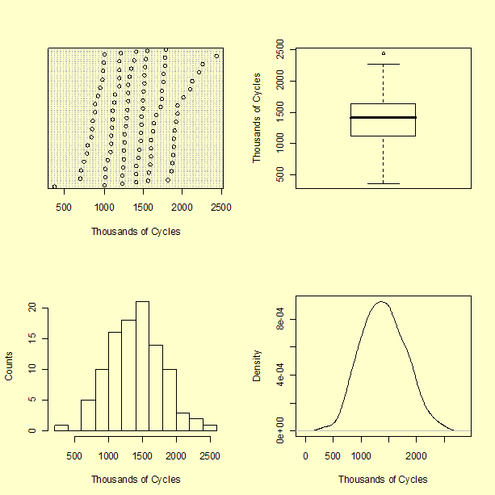
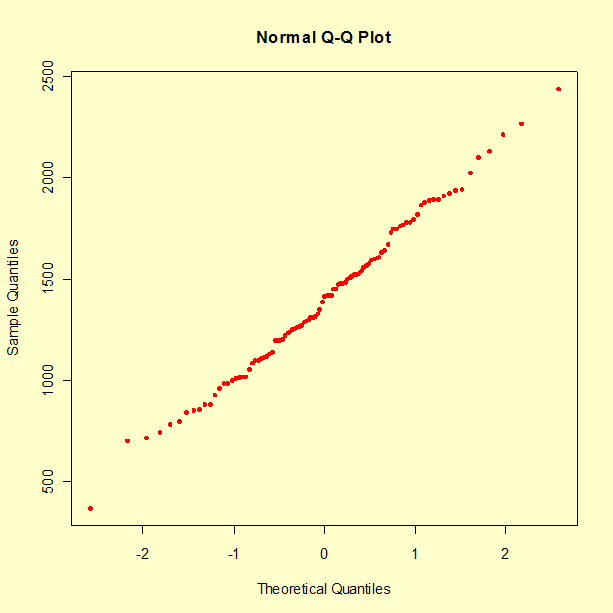
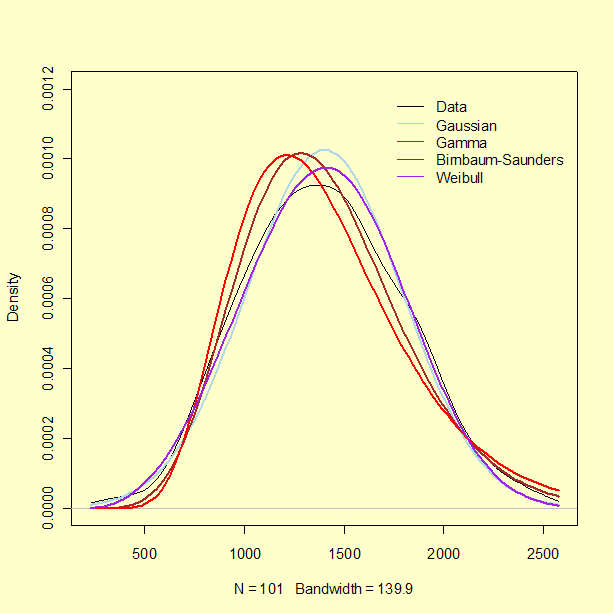
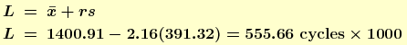

1.4. EDA Case Studies
1.4.2. Case Studies
1.4.2.9. Fatigue Life of Aluminum Alloy Specimens
1.4.2.9.2. |
Graphical Output and Interpretation |

These several plots variously show that the measurements range from a value slightly greater than 350,000 to slightly less than 2,500,000 cycles. The boxplot suggests that the largest measured value may be an outlier.
A recommended first step is to check consistency between the data and what is to be expected if the data were a sample from a particular probability distribution. Knowledge about the underlying properties of materials and of relevant industrial processes typically offer clues as to the models that should be entertained. Graphical diagnostic techniques can be very useful at this exploratory stage: foremost among these, for univariate data, is the quantile-quantile plot, or QQ-plot (Wilk and Gnanadesikan, 1968).
Each data point is represented by one point in the QQ-plot. The ordinate of each of these points is one data value; if this data value happens to be the kth order statistic in the sample (that is, the kth largest value), then the corresponding abscissa is the "typical" value that the kth largest value should have in a sample of the same size as the data, drawn from a particular distribution. If F denotes the cumulative probability distribution function of interest, and the sample comprises n values, then F -1 [(k - 1/2) / (n + 1/2)] is a reasonable choice for that "typical" value, because it is an approximation to the median of the kth order statistic in a sample of size n from this distribution.
The following figure shows a QQ-plot of our data relative to the Gaussian (or, normal) probability distribution. If the data matched expectations perfectly, then the points would all fall on a straight line.

In practice, one needs to gauge whether the deviations from such perfect alignment are commensurate with the natural variability associated with sampling. This can easily be done by examining how variable QQ-plots of samples from the target distribution may be.
The following figure shows, superimposed on the QQ-plot of the data, the QQ-plots of 99 samples of the same size as the data, drawn from a Gaussian distribution with the same mean and standard deviation as the data.

The fact that the cloud of QQ-plots corresponding to 99 samples from the Gaussian distribution effectively covers the QQ-plot for the data, suggests that the chances are better than 1 in 100 that our data are inconsistent with the Gaussian model.
This proves nothing, of course, because even the rarest of events may happen. However, it is commonly taken to be indicative of an acceptable fit for general purposes. In any case, one may naturally wonder if an alternative model might not provide an even better fit.
Knowing the provenance of the data, that they portray strength of a material, strongly suggests that one may like to examine alternative models, because in many studies of reliability non-Gaussian models tend to be more appropriate than Gaussian models.
- Normal distribution
- Gamma distribution
- Birnbaum-Saunders distribution
- 3-parameter Weibull distribution
The maximum likelihood estimates are the following:
- Gaussian: mean 1401, standard deviation 389
- Gamma: shape 11.85, rate 0.00846
- Birnbaum-Saunders: shape 0.310, scale 1337
- 3-parameter Weibull: location 181, shape 3.43, scale 1357

These limitations notwithstanding, it is worth examining the corresponding QQ-plots, shown below, which suggest that the Gaussian and the 3-parameter Weibull may be the best models.

Two criteria can be employed for a formal comparison: Akaike's Information Criterion (AIC), and the Bayesian Information Criterion (BIC) (Hastie et. al., 2001). The smaller the value of either model selection criterion, the better the model:
AIC BIC
GAU 1495 1501
GAM 1499 1504
BS 1507 1512
WEI 1498 1505
On this basis (and according both to AIC and BIC), there seems to be no cogent reason to replace the Gaussian model by any of the other three. The values of BIC can also be used to derive an approximate answer to the question of how strongly the data may support each of these models. Doing this involves the application of Bayesian statistical methods [8.1.10].
We start from an a priori assignment of equal probabilities to all four models, indicating that we have no reason to favor one over another at the outset, and then update these probabilities based on the measured values of lifetime. The updated probabilities of the four models, called their posterior probabilities, are approximately proportional to exp(-BIC(GAU)/2), exp(-BIC(GAM)/2), exp(-BIC(BS)/2), and exp(-BIC(WEI)/2). The values are 76 % for GAU, 16 % for GAM, 0.27 % for BS, and 7.4 % for WEI.
One possible use for the selected model is to answer the question of the age in service by which a part or structure needs to be replaced to guarantee that the probability of failure does not exceed some maximum acceptable value, for example 0.1 %.The answer to this question is the 0.1st percentile of the fitted distribution, that is G -1 (0.001) = 198 thousand cycles, where, in this case, G -1 denotes the inverse of the fitted, Gaussian probability distribution.
To assess the uncertainty of this estimate one may employ the statistical bootstrap [1.3.3.4]. In this case, this involves drawing a suitably large number of bootstrap samples from the data, and for each of them applying the model fitting and model selection exercise described above, ending with the calculation of G -1 (0.001) for the best model (which may vary from sample to sample).
The bootstrap samples should be of the same size as the data, with each being drawn uniformly at random from the data, with replacement. This process, based on 5,000 bootstrap samples, yielded a 95 % confidence interval for the 0.1st percentile ranging from 40 to 366 thousands of cycles. The large uncertainty is not surprising given that we are attempting to estimate the largest value that is exceeded with probability 99.9 %, based on a sample comprising only 101 measured values.

where factor r is given in Table A.14 of Hahn and Meeker (1991) or can be obtained from an R program.